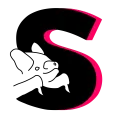
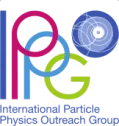
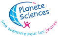
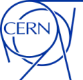
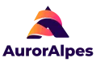

My science communication experiences
During my master's in science communication, I had the opportunity to try my hand at many projects — detailed in my portfolio — and obtained several temporary contracts, internships and fixed-term contracts as a outreacher.

July 2025 – · Sérotine
Publication manager — science magazine
Further details
Sérotine is a science popularization web magazine covering varied, little-known topics in a lighthearted yet rigorous tone. Writing and proofreading articles, editorial consistency, audio versions, coordinating the editorial board, project scoping and AI-use guidelines.

March – July 2025 · IPPOG
Administrative student
Further details
🌐 Development of a web platform giving an overview of outreach projects in high-energy physics. Writing project articles, redesigning categories and tags, contributing to the new website strategy.
🌐 Participation in the 29th IPPOG Congress.
🌐 Participation in the 29th IPPOG Congress.

August 2024 · Planète Sciences
Scientific mediator in vacation centers
Further details
🚀 Development of water-rocket activities.
🌋 Activities around effervescence and mediation.
🌋 Activities around effervescence and mediation.

May – July 2024 · CERN
Internship with the exhibition team
Further details
✍️ Development of short demonstrations in the CERN Science Gateway exhibits.
🤝 Training guides for these demonstrations.
🤝 Training guides for these demonstrations.
Dec. – Feb. 2024 · Cosmocité
Scientific mediator
Further details
💬 Mediation for visitors in Cosmocité's permanent exhibition.

November 2023 · AurorAlpes
Scientific mediator at ESWW24
Further details
🎪 Holding a science village on space-weather themes for the general public and school classes.